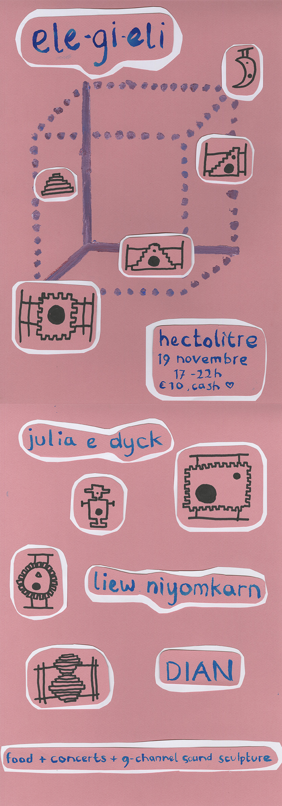

ele-gi-eli
A Sunday evening programme of concerts
-
November 19th, 2023 at 17:00 until 22:00
5 hour long +-
entrance 10eur (cash only)
Hectolitre (Reactor space)
-
Rue de l'Hectolitre 3,
1000 Bruxelles
-
ele-gi-eli is the name of this Sunday evening programme of concerts, but also the title of Ari-Pekka Leinonen's 9-channel sound sculpture
- which is its sonic engine. He writes about it:
A sound system that playfully speculates the possibility of a loudspeaker to function simultaneously as an acoustic diffuser panel.
A positive Brusselization has formed its shape through the influence of city’s skyline, unconstrained architecture and minor details in its facade.
The loudspeakers as sculptures express the potential of dance and bodily listening as a collective leisure activity.
ele-gi-eli is conclusive chapter for the sound triptych consisting of two earlier works L=10 and ||: o / dear<3 :||
For the occasion of this evening, the nine sculptural elements of ele-gi-eli are spatialized around the volume of Hectolitre's atrium space, Reactor.
In order to sense the acoustic characteristics of the sound system and the place, the artists play entirely electronic sets.
10€ (cash only), hot food available.
Image: poster by Ari-Pekka Leinonen & Jesse van Winden
-
Diana Duta is an artist working with sound in hypnotic ways, with a background in art and socio-cultural linguistics.
Her work focuses on concepts of mimesis and reiteration within the linguistic and the natural worlds, our relationship to
the non-human and acts of listening. Her solo project DIAN makes things disappear with words, while performing an oracular striptease in the dark.
Other outputs include works for radio, sound installations and collaborative translation projects.
DIAN's debut album Grammar, glamour, grimoire will be released by Anterior Insula in 2024.
-
https://jambes.bandcamp.com/album/throw-roses-into-the-abyss
-
Julia E. Dyck is an artist, hypnotist and radio producer whose relational and speculative practice explores possible connections between the body,
(sub)consciousness and technology through performance, installation and transmission. Dyck works with the voice, precise sonic frequencies, electronics,
resonant instruments and hypnotic techniques to create collective somnambulist experiences. She often works collaboratively as a member of duos Future Perfect,
Platitudes, Silver Moon X, and collectives Audio Placebo Plaza and ffiles radio.
-
www.juliaedyck.com
-
Ari-Pekka Leinonen works with performatic sound art installations that utilise sound projection with multiple loudspeakers. Other than that he is interested in carpenting,
possibilities of loudspeakers as wooden sculptures and how the sound systems create platforms for moving bodies and for sonic storytelling.
-
https://ari-pekkaleinonen.com/index.html
-
Liew Niyomkarn is a sound artist and musician whose background lies in experimental sound practice and performance.
Her work primarily explores echoes and sustained sounds achieved through acoustic instruments and Supercollider,
a coding language employed to craft various tuning systems.
She integrates field recordings to capture the essence of time and everyday routines, immersing herself in the sounds
of the wilderness, archival recordings, and the ambient music culture. These elements are amalgamated with her sonic palette
and the intrinsic properties of sound, such as spatial characteristics, feedback loops, and the manipulation of extended decays and harmonics.
She presents her work through live performances and sound installations.
-
https://liewniyomkarn.tumblr.com
-
-
PROGRAM
17h00 – doors open
17h30 – 18h30 – 1st performance
18h30 – 19h00 - break
19h00 – 20h00 – 2nd performance
20h00 – 20h30 - break
20h30 – 21h30 - 3rd performance
22h00 - the end
See you soon!